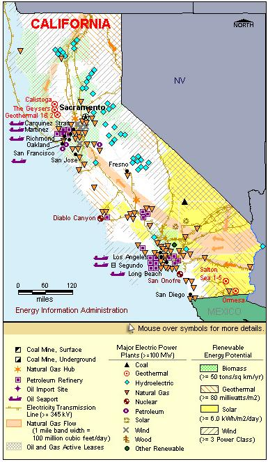

State Overview
There are two operating nuclear power plants in California:
San Onofre (units 2 and 3) in San Diego County
- Unit 1, a first generation Westinghouse commercial unit that operated for 25 years, closed permanently in 1992 and has since been decommissioned.
Diablo Canyon in San Luis Obispo County
- Advanced seismic and safety systems are installed to alert operators to activity at the four fault lines in the area. The plant is designed to withstand earthquakes up to magnitude 7 on the Richter scale.
Contribution of Nuclear Power
California’s nuclear capacity is only 7% of the State’s total capacity, but this still makes California’s nuclear industry one of the ten largest in the nation.
California’s total nuclear generation is over 16% of the State’s total generation.
California is a net importer of electricity, importing about 28% of its electric power use.
License Renewals & New Applications
- Diablo Canyon: On November 24, 2009, Diablo Canyon submitted a license renewal application for units 1 and 2. Unit 1’s license is currently set to expire in November 2024. Unit 2’s license will expire in August 2025.
- San Onofre: Unit 2’s license will expire in February 2022. Unit 3’s license will expire in November 2022.
Permanently Shutdown Commercial Reactors
- San Onofre (unit 1) in San Diego County
- Vallecitos in Pleasanton
- Humboldt Bay in Humboldt County
- Rancho Seco in Sacramento

|
| California Total Electric Power Industry, Summer Capacity and Net Generation, by Energy Source, 2008 |
| Primary Energy Source |
Summer Capacity
(MW) |
Share of State Total
(Percent) |
Net Generation
(Thousand MWh) |
Share of State Total
(Percent) |
| Nuclear |
4,390 |
6.8 |
32,482 |
15.6 |
| Coal |
367 |
0.6 |
2,280 |
1.1 |
| Hydro and Pumped Storage |
13,936 |
21.7 |
24,449 |
11.8 |
| Natural Gas |
38,635 |
60.3 |
119,992 |
57.7 |
| Other1 |
203 |
0.3 |
2,255 |
1.1 |
| Other Renewable1 |
5,822 |
9.1 |
24,784 |
11.9 |
| Petroleum |
752 |
1.2 |
1,742 |
0.8 |
| Total |
64,105 |
100.0 |
207,984 |
100.0 |
| California Nuclear Power Plants, Summer Capacity and Net Generation, 2008 |
| Plant Name/Total Reactors |
Summer Capacity
(MW) |
Net Generation
(Thousand MWh) |
Share of State Nuclear
Net Generation
(Percent) |
Owner |
Diablo Canyon
Unit 1, Unit 2 |
2,240 |
17,091 |
52.6 |
Pacific Gas & Electric Co |
San Onofre
Unit 2, Unit 3 |
2,150 |
15,392 |
47.4 |
Southern California Edison Co |
2 Plants
4 Reactors |
4,390 |
32,482 |
100.0 |
|
|
Plant Profiles
Diablo Canyon Nuclear Power Plant
| Diablo Canyon |
| Unit |
Summer Capacity
(MW) |
Net Generation
(Thousand MWh) |
Summer Capacity Factor
(Percent) |
Type |
Commercial Operation Date |
License Expiration Date |
| 1 |
1,122 |
9,839 |
100.1 |
PWR |
5/7/1985 |
11/2/2024 |
| 2 |
1,118 |
7,252 |
74.0 |
PWR |
3/13/1986 |
8/20/2025 |
| |
2,240 |
17,091 |
87.1 |
|
|
|
Operator: Pacific Gas & Electric Company
Location and Service Territory: The Diablo Canyon plant is on a 750-acre site in San Luis Obispo County, California.
Construction Cost: $11.556 billion (2007 USD)
Staffing: 1,200 employees
Reactor Descriptions: Both units at Diablo Canyon are Westinghouse four-loop pressurized water reactors.
Cooling System: Diablo Canyon is cooled using a once-through system that draws water from the Pacific Ocean.
San Onofre Nuclear Generating Station
| San Onofre |
| Unit |
Summer Capacity
(MW) |
Net Generation
(Thousand MWh) |
Summer Capacity Factor
(Percent) |
Type |
Commercial Operation Date |
License Expiration Date |
| 2 |
1,070 |
8,857 |
94.5 |
PWR |
8/8/1983 |
2/16/2022 |
| 3 |
1,080 |
6,535 |
69.1 |
PWR |
4/1/1984 |
11/15/2022 |
| |
2,150 |
15,392 |
81.7 |
|
|
|
Operator: Southern California Edison Company
Location and Service Territory: This 84-acre site is near San Clemente, California, in San Diego County.
Construction Cost: Units 2 and 3 cost $8.968 billion (2007 USD)
Staffing: San Onofre Nuclear Generating Station, better known to locals by its acronym (SONGS), has more than 2,000 employees.
Reactor Descriptions: San Onofre houses two Combustion Engineering pressurized water reactors. Each reactor has two steam generating loops.
Cooling System: San Onofre relies on a unique cooling system that uses a 3,000-foot pipe to draw water from the Pacific Ocean. A ‘velocity cap’ diverts fish from the intake. Water is dispersed from 1,500-foot pipes through hundreds of openings, thereby helping maintain a temperature that varies by only a couple of degrees from that of the ocean.
see also:
annual
nuclear statistics back to 1953
projected electricity capacity to 2030
international
electricity statistics
|
|